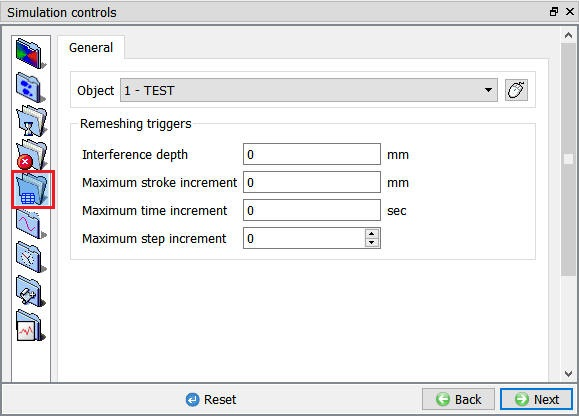
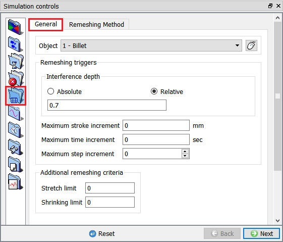
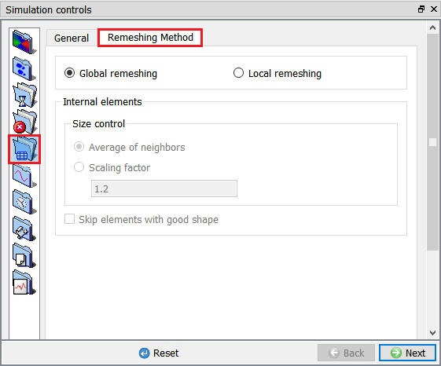
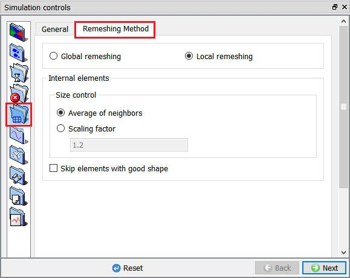

9.4.1. Maximum interference depth (RMDPTH)
9.4.2. Maximum stroke increment (RMSTRK)
9.4.3. Maximum time increment (RMTIME)
9.4.4. Maximum step increment (RMSTEP)
9.4.5. Penetration Distance (absolute)
9.4.6. Penetration Distance (relative)
9.4.7. Additional remeshing criteria
[2D, 3D]: Remeshing Criteria (Autoremesh) is the most convenient way to handle the remeshing of objects undergoing large plastic deformation. The Remeshing Criteria Window ( Fig. 9.4.1. )contains a group of parameters that control when and how often the mesh will be regenerated on a meshed object based on assignment of certain triggers.There are four keywords that control the initiation of a remeshing procedure (RMDPTH, RMTIME, RMSTEP and RMSTRK) for an object. When the remeshing criteria of any of these keywords has been fulfilled or the mesh becomes unusable (negative Jacobian), the object will be remeshed. During the simulation, if an object satisfies any of its remeshing criteria, a new mesh is generated, the solution information from the old mesh is interpolated onto the new mesh and the simulation continues.

(a)

(b)
Remeshing Criteria Window; (a) For 2D, (b) For 3D
The maximum Interference Depth (RMDPTH) is used to start a remeshing procedure. If any portion of a master object penetrates a slave object beyond the depth specified under RMDPTH, remeshing will be triggered.
Anytime the maximum stroke increment (RMSTRK) is exceeded by the stroke increment of the primary die since the last remeshing step, a new remeshing step will be initiated.
Anytime the Maximum Time Increment (RMTIME) (Value of Elapsed Time) has elapsed since the last remeshing step, a new remeshing step will be initiated.
Anytime the Maximum Step Increment (Number of Steps) has occurred since the last remeshing step, a new remeshing step will be initiated.
Purpose of Criteria [2D, 3D]
When a sharp edge on a tool or die impinges on the workpiece, the sharp edge may deeply penetrate an element edge. If this depth is severe, the elements may get stretched out and remeshing may become difficult. Before this depth is achieved, remeshing with place nodes about the edge and allow the simulation to continue unhampered.
If a positive number (in the unit of length) is entered, the program will conduct a check on each surface edge that has a contact node on each end. The distance from the middle of the edge to the die surface is calculated. If the maximum penetration depth exceeds the specified limit, remeshing will be triggered.
If a negative number (a fraction) is entered, the program will conduct a check on each surface edge that has a contact node on each end. The distance from the middle of the edge to the die surface is calculated and divided by the original length of the edge. If the ratio exceeds the magnitude of the specified value, remeshing will be triggered.
Default Value [3D]:
The pre-processor now has a default value 0.7 with a relative setting.
Global and Local Remeshing Options [3D]
For DEFORM-3D, mesh generation has been enhanced with local meshing functionality.
Default settings point to existing global remeshing procedures, where in every element of the old mesh gets replaced with new mesh element, followed by interpolation.
New Local meshing functionality allows several options to control the element size and quality. Local remeshing also has options to keep the meshing truly local, to minimize the interpolation related errors .(See Fig. 9.4.3.) In the current version, all the local meshing related settings are stored in the local files, not in the database.
This means when the user copies the database file from one folder to another, local remesh settings will not be carried over unless all the files are copied to the working folder.

Global Remeshing criteria window

Local Remeshing criteria window
Internal Elements:
Related Topics: